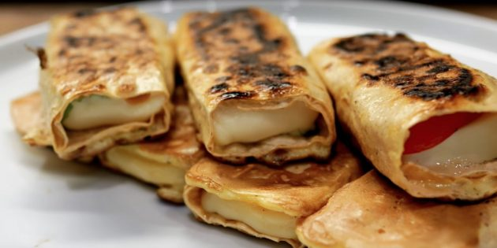

Бутерброд с яичницей и беконом

Ингредиенты
2 яйца;
соль — по вкусу;
1 ломтик деревенского хлеба;
2 ломтика ветчины или бекона;
зелень — по вкусу.
Приготовление Поджарьте два яйца и слегка посолите. На хлеб сначала выложите ветчину или бекон, а сверху — яйца. Посыпьте рубленой зеленью.
Рулетики из лаваша с сыром

Ингредиенты
1 лаваш;
300 г твёрдого сыра;
2 яйца;
соль — по вкусу;
молотый чёрный перец — по вкусу.
Приготовление Разрежьте лаваш на полоски по ширине кусочка сыра. Сыр разделите на несколько ломтиков, выложите каждый на полоску лаваша и заверните рулетом. К сыру можно добавить помидоры и зелень. Венчиком взбейте яйца с солью и перцем. Обмакните рулетики в яичную смесь и выложите на сухую горячую сковороду. Обжаривайте на среднем огне по 2–3 минуты с каждой стороны.
Омлет с ветчиной и сыром в микроволновке
Ингредиенты
2 яйца;
1 столовая ложка молока;
небольшой кусочек сыра;
несколько перьев зелёного лука (можно использовать любую другую зелень);
небольшой кусочек ветчины;
соль — по вкусу;
молотый чёрный перец — по вкусу.
Приготовление Разбейте в кружку яйца, влейте молоко и перемешайте. Добавьте крупно натёртый сыр, рубленую зелень и маленькие кубики ветчины. Приправьте солью и перцем и перемешайте. Поставьте в микроволновку на полной мощности на 2 минуты.